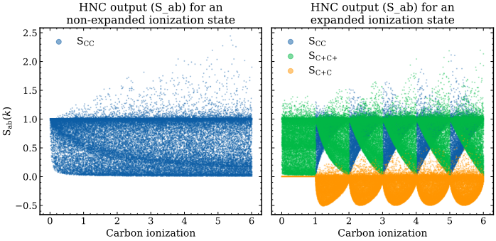

jaxrts.experimental.SiiNN.NNModelExpandedZ
- class jaxrts.experimental.SiiNN.NNModelExpandedZ(*args: Any, **kwargs: Any)[source]
Extension of
NNModelthat augments the input representation of the ionization state in order to better capture discontinuities occurring at integer ionization values.In expanded plasma states, the Sii output exhibits a discontinuity when the ionization state approaches an integer value. Standard fully connected networks struggle to approximate such behaviour because they implicitly assume smooth mappings between inputs and outputs.
To mitigate this issue, the ionization input
Z_iis transformed into two components:the integer ionization stage \(n_i = \lfloor Z_i^{phys} \rfloor\)
the fractional coordinate within that stage \(\phi_i = Z_i^{phys} - n_i\)
where
\[Z_i^{phys} = Z_i \cdot \mathrm{norm\_Z}_i\]is the ionization value in physical units.
This transformation allows the neural network to learn
smooth behaviour within each ionization stage
discontinuous transitions between stages
while keeping the underlying architecture identical to
NNModel.The behaviour of S_ab(k) for an expanded and non-expanded carbon dataset is shown below, highlighting the dicontinuity at integer ionization values.

Construct an expanded neural network model.
The dimensionality of the first layer is increased because each ionization variable
Z_iis replaced by two features: its integer ionization stage and its fractional coordinate within that stage.- Parameters:
din (int) – Number of input nodes in the original model.
dhid (list[int]) – List containing the number of neurons in each hidden layer.
dout (int) – Number of output nodes.
rngs (nnx.Rngs) – Random number generator used for parameter initialization.
no_of_atoms (int or None, optional) – Number of ion species in the plasma. If not given, this quantity is inferred from
dinasdin - 3.
Methods
__init__(din, dhid, dout, rngs[, no_of_atoms])Construct an expanded neural network model.
eval(**attributes)Sets the Module to evaluation mode.
Expand the ionization features of the input tensor.
Warning: this method is method is deprecated; use
iter_children()instead.Warning: this method is method is deprecated; use
iter_modules()instead.perturb(name, value[, variable_type])Extract gradients of intermediate values during training.
set_attributes(*filters[, ...])Sets the attributes of nested Modules including the current Module.
set_norms(T, rho, Z, k)Set the normalization of the input layers.
sow(variable_type, name, value[, reduce_fn, ...])Store intermediate values during module execution for later extraction.
train(**attributes)Sets the Module to training mode.
Attributes
Shape of the hidden layers.
Effective input dimensionality of the original model.
Shape of the output layer.
Get the input layer normalizations as a dictionary.
Shape of the full model (input, hidden, and output layers).
Normalization for T
Normalization for rho.
Normalization the ionization (this is an array with one entry for each component.
Normalization for k in units inverse angström
{kind=link}